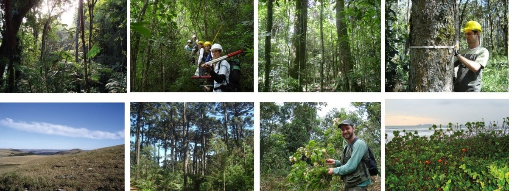

Inventário dos Remanescentes Florestais
Instituição Responsável:
Universidade Regional de Blumenau (FURB)
Coordenador:
Prof. Dr. Alexander Christian Vibrans
Objetivo:
Avaliar a composição de espécies, estrutura (diamétrica, vertical e horizontal) e dinâmica florestal por meio de dados provenientes do inventário contínuo de Unidades Amostrais permanentes distribuídas pelo estado.
Para saber mais, consulte o Manual de Campo e o artigo IFFSC – Aspectos Metodológicos.
O FlorestaSC adota uma metodologia compatível com a do Inventário Florestal Nacional (IFN), embora intensificada e com os critérios de inclusão ampliados para atender às especificidades estaduais.
Esta metodologia é baseada num inventário sistemático de múltiplas ocasiões, com repetição da amostragem feita a cada cinco anos, que visa fornecer informações e monitorar o estado de conservação dos recursos florestais, bem como as mudanças ocorridas ao longo do tempo.
Adotou-se para a definição de “floresta” o conceito da FAO (2009)*: terras com área mínima de 0,5 ha, árvores com altura > 5 m e cobertura das copas ≥ 10%.
O levantamento de dados consiste no acompanhamento de 1074 Unidades Amostrais (UA) que compõem uma rede de pontos sistematizados (grade) de 10 × 10 km que cobre todo o Estado e que é compatível com a grade 20 × 20 km do IFN. Excepcionalmente, na área de ocorrência da Floresta Estacional Decidual (Klein, 1978), a qual se encontra extremamente reduzida e fragmentada, a amostragem é adensada para uma grade de 5 × 5 km, possibilitando a medição de um número adicional e suficiente de Unidades Amostrais, totalizando ao final 1153 UA em acompanhamento pelo FlorestaSC.

Resumindo...
O conjunto de Unidades Amostrais do FlorestaSC compreende diferentes finalidades:
- 556 UA avaliadas unicamente por Sensoriamento Remoto: utilizadas para definir e quantificar o uso do solo através da interpretação de imagens de satélite;
- 430 UA Regulares: avaliação em campo de florestas bem desenvolvidas (em estágio médio e avançado de sucessão), das quais 370 UA pertencem à grade de 10 × 10 km e 60 UA à grade 5 × 5 km. Em 33 UA da grade de 10 × 10 km, situadas na Floresta Ombrófila Densa, foi realizado também o levantamento de plantas epífitas;
- 148 UA “fora da floresta”: instaladas em outros usos do solo, incluindo florestas pouco desenvolvidas (em estágio inicial de sucessão), reflorestamento, pastagens e áreas agrícolas com árvores esparsas.
- 19 UA Complementares: situadas fora das grades sistemáticas e implantadas em florestas aparentemente bem conservadas de domínio público e privado.

Unidade Amostral
A Unidade Amostral (UA), em forma de conglomerado, utilizada pelo FlorestaSC possui área total de 4.000 m² (0,4 ha); é composto por quatro subunidades de 1.000 m² cada (20 × 50 m), orientadas na direção dos quatro pontos cardeais (Norte, Sul, Leste e Oeste), mantendo, cada uma, 30 m de distância do centro do conglomerado.
A imagem abaixo mostra o layout atual do conglomerado utilizado pelo FlorestaSC, com a delimitação das subparcelas e transectos para a medição dos diferentes estratos.
Observação:
Segue abaixo a metodologia atualizada e definitiva para o inventário de cada estrato, após adaptações metodológicas posteriores às publicações dos primeiros resultados.
Critérios de inclusão na amostra
Arbóreo/Arbustivo: DAP ≥ 10 cm e altura ≥ 1,3 m;
Regeneração: DAP < 10 cm e altura ≥ 1,3 m;
Herbáceas: espécie herbácea dominante na subparcela;
Necromassa: galhos e troncos mortos com diâmetro > 2,5 cm que interceptam os dois transectos no centro da UA.
Levantamento de Árvores Fora da Floresta
Também foram instaladas 148 parcelas para um levantamento das árvores “fora da floresta” realizado considerando a grade 20 × 20 km, para os quais os mapeamentos da cobertura florestal do estado, realizados em 2005 (SAR, 2005) e 2008 (PPMA, 2008), não indicaram a presença de florestas nativas.
Dados sobre o uso do solo foram levantados nessas parcelas, independentemente se estivessem cobertos ou não por florestas (50 foram instaladas em florestas em estágio inicial de sucessão, 34 em reflorestamentos e 64 em agricultura, pastagem ou edificações).

Levantamento de Epífitos
Epífitos são plantas que crescem sobre outras, mas sem retirar delas qualquer nutriente, como, por exemplo, orquídeas, bromélias e samambaias. As plantas que retiram nutrientes são chamadas parasitas, como, por exemplo, a erva-de-passarinho (Struthanthus sp.).
Um levantamento independente foi conduzido na Floresta Ombrófila Densa com foco nos epífitos vasculares. Para isso foram selecionadas 33 parcelas do FlorestaSC e delimitado a partir delas uma área circular com raio de 80 metros, onde foram escaladas – por meio de técnicas de arvorismo – ao menos oito árvores (forófitos) por parcela, e todos os epífitos vasculares férteis foram coletados. Eventuais coletas de epífitos no solo foram realizadas quando esses estavam ao alcance – em galhos caídos, sobre arvoretas, lianas e samambaias arborescentes.

Mais detalhes no Manual de Campo e no artigo IFFSC – Aspectos Metodológicos.
*FAO. 2009. National Forest Monitoring and Assessment – Manual for integrated field data collection. NFMA Paper37/N. Roma. FAO.
FlorestaSC
florestasc@furb.br 47 3221-6100
Página migrada de floresta.sc.gov.br.